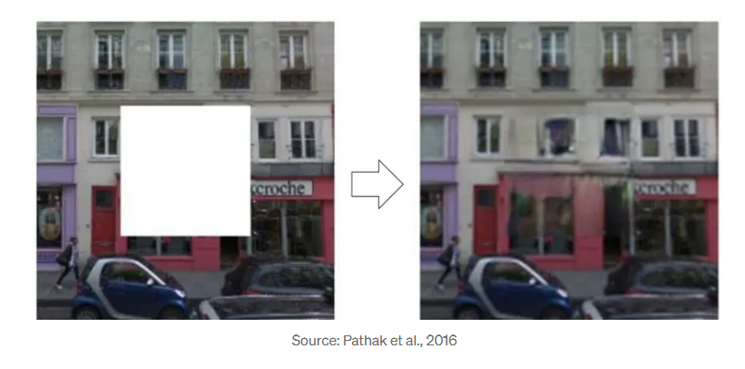

SSL
Pretext tasks, contrastive learning, SimCLR, MoCo, and why labeling is overrated.
Let's just get to the point. You already know ML has the usual trio: supervised, unsupervised, and reinforcement learning. And labeling is basically paying someone to babysit your dataset — expensive, slow, and honestly annoying.
So to avoid this, we rely on something smarter: Self-Supervised Learning (SSL).
Pretext Tasks
The whole trick behind SSL is simple: create some artificial task where the model has to learn useful features just to solve that task, even if the task itself is completely pointless in the real world. We don't care if the model becomes world-class at rotation-guessing or patch-shuffling. We care about the representations it learns while doing it.
Later, you fine-tune those learned features for actual downstream jobs — classification, detection, whatever — and now you need way fewer labeled samples.
Some of the ingenious pretext tasks:
Rotation Prediction: Show the model an image and rotate it (0°, 90°, 180°, or 270°). The model's job is to predict which rotation was applied. To do this, it must implicitly understand the natural orientation of objects — that cats stand upright, cars don't drive upside down.
Image Inpainting (Context Encoders): Cut out a patch from an image and ask the model to fill in the blank. To succeed, the model needs to understand the surrounding context and generate a plausible patch, forcing it to learn about textures, shapes, and object parts.

Many context-encoder setups bring in adversarial learning, because plain reconstruction loss alone usually gives boring blurry outputs. The total loss has two parts:
- Reconstruction loss — makes sure the filled patch roughly matches the target.
- Adversarial loss — pushes the model to generate something that actually looks real rather than a smooth average.
There are lots of other pretext tasks:
Jigsaw Puzzles: Scramble patches of an image and challenge the model to put them back in the correct order. This forces the model to learn spatial relationships and object structure.
Colorization: Give the model a grayscale image and ask it to predict the colors. Since color often correlates with semantics (grass is green, sky is blue), this pushes the model to learn about objects. Video colorization takes this further — to color a car consistently across frames, the model must implicitly track it.
Relative Patch Location: Show the model two patches from an image and ask it to predict the relative position of one patch to the other.
How to evaluate a SSL method
You train on unlabeled data with a pretext task, freeze the encoder, attach a shallow linear classifier, and train that classifier on a small labeled set. If your frozen features are good, the linear probe accuracy should be high. This is the standard linear evaluation protocol.
Contrastive Learning
The idea of pretext tasks will ensure the model understands the data — if the image is rotated, the relative position of patches, how each patch is colored. This entire family can be generalised via contrastive learning.
The core idea is simple yet powerful: learn a representation where similar (positive) examples are pulled closer together, and dissimilar (negative) examples are pushed further apart.
How do we get positive and negative examples without labels? Through data augmentation. A positive pair is two different augmented views of the same image (different crop + color jitter). Negative pairs are augmented views from different images.
Important clarification: positive pair means augmented views of the same data point, not data points from the same class or cluster.
The goal is to train an encoder so that the similarity score (often cosine similarity) between positive pairs is much higher than between negative pairs. This is framed as the InfoNCE loss:
$$L = -\mathbb{E}_x\left[\log\frac{\exp(f(x)^\top f(x^+)/\tau)}{\exp(f(x)^\top f(x^+)/\tau) + \sum_{j=1}^{N-1}\exp(f(x)^\top f(x_j^-)/\tau)}\right]$$This is actually similar to cross-entropy. Standard CCE:
$$L_{\text{CCE}} = -\log\frac{e^{s_y}}{\sum_j e^{s_j}}$$InfoNCE is exactly that — treat the positive pair as the "correct class" and all negatives as wrong classes. The model tries to identify the one positive sample from a set of many negatives.
$$L_{\text{InfoNCE}} = -\log\frac{\exp(\text{sim to positive})}{\sum \exp(\text{sim to all candidates})}$$SimCLR
SimCLR (A Simple Framework for Contrastive Learning) uses a large batch of images. For each image, it creates two augmented versions. Within a batch, the two versions of the same image are positive pairs, while all other images (and their augmented versions) serve as negatives.
SimCLR found that using a non-linear projection head $g(\cdot)$ during training (which is discarded after pretraining) and strong data augmentation significantly improves results. Its main challenge is that it requires very large batch sizes to work well, often needing TPUs.
MoCo
MoCo (Momentum Contrast) cleverly decouples batch size from the number of negatives. Instead of needing all negatives in the current batch, MoCo maintains a queue of recent key representations.
For a given query (an augmented image), its positive key is encoded in real-time, while negative keys come from the queue. The key encoder isn't updated via backpropagation — it's a momentum-updated version of the query encoder:
$$\theta_k \leftarrow m \cdot \theta_k + (1 - m) \cdot \theta_q$$This allows MoCo to maintain a huge number of negatives without needing massive batches. MoCo V2 later incorporated the projection head and better augmentation from SimCLR, achieving strong results with smaller memory footprints.
Beyond Single Images
Contrastive learning doesn't stop at images. Contrastive Predictive Coding (CPC) takes the same idea to sequential data — audio, text, or image patches treated as a sequence. The model tries to predict future latent representations from past context and uses a contrastive loss to separate the actual future sample from negatives. If it fails to understand the underlying structure, it simply can't do the prediction.
Things get even more interesting when contrastive learning jumps across modalities. CLIP (Contrastive Language–Image Pre-training) learns a joint embedding space for images and their textual descriptions using massive web-scale (image, text) pairs. The objective is simple — pull the correct image–text pair together and push apart every incorrect pairing. The result is powerful zero-shot capability: the model can classify images purely from text prompts, even for categories it was never explicitly trained on.
References
- Fei-Fei Li, Jiajun Wu, Ruohan Gao — Stanford CS231n, Lecture 14
- Doersch et al., 2015 — Unsupervised Visual Representation Learning
- Chen et al., 2020 — A Simple Framework for Contrastive Learning of Visual Representations (SimCLR)
- Pathak et al., 2016 — Context Encoders: Feature Learning by Inpainting